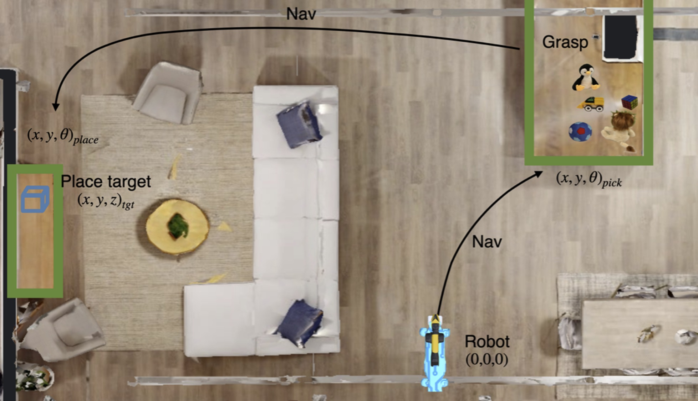
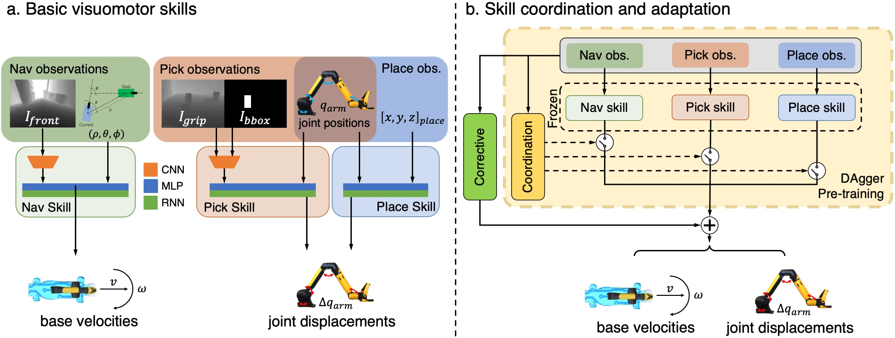

ASC: Adaptive Skill Coordination
for Robotic Mobile Manipulation


Main Video
Real-World Deployment in Apartment
30x speed
In-the-wild real-world demonstrations
The following demonstrations utilize Owl-ViT for open-vocabulary object detection.
Abstract
We present Adaptive Skill Coordination (ASC) -- an approach for accomplishing long-horizon tasks (e.g., mobile pick-and-place, consisting of navigating to an object, picking it, navigating to another location, placing it, repeating). ASC consists of three components -- (1) a library of basic visuomotor skills (navigation, pick, place), (2) a skill coordination policy that chooses which skills are appropriate to use when, and (3) a corrective policy that adapts pre-trained skills when out-of-distribution states are perceived. All components of ASC rely only on onboard visual and proprioceptive sensing, without access to privileged information like pre-built maps or precise object locations, easing real-world deployment. We train ASC in simulated indoor environments, and deploy it zero-shot in two novel real-world environments on the Boston Dynamics Spot robot. ASC achieves near-perfect performance at mobile pick-and-place, succeeding in 59/60 (98%) episodes, while sequentially executing skills succeeds in only 44/60 (73%) episodes. It is robust to hand-off errors, changes in the environment layout, dynamic obstacles (e.g., people), and unexpected disturbances, making it an ideal framework for complex, long-horizon tasks.
Task Description

From its initial location, the robot navigates to a receptacle located at (x, y, θ)_pick, searches for and picks a target object amongst the clutter. It then navigates to the place receptacle corresponding to the object, located at (x, y, θ)_place and places the object at the target place location (x, y, z)_tgt.
Framework Architecture

Training ASC consists of two steps: (a) First, we train a library of 3 basic visuomotor skills in diverse simulated environments. The skills are trained using RL to achieve the relatively shorter-horizon tasks of navigation, picking and placing, and command robot base velocities and delta joint positions. (b) Next, we train a skill coordination policy that chooses which skills are appropriate to use based on observations, and a corrective policy that adapts the pre-trained skills in out-of-distribution states, for the task of object rearrangement.